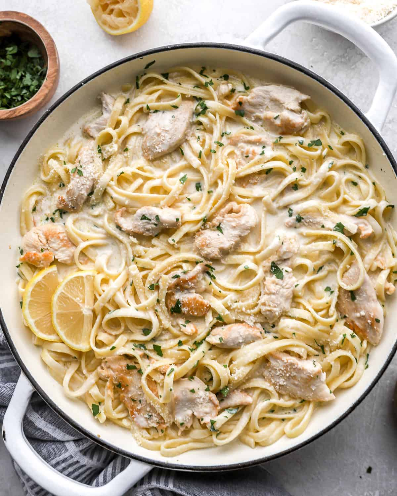

Home
Creamy Pasta

Description
This Creamy Pasta is a rich and flavorful dish, perfect for a cozy dinner. The creamy sauce made from heavy cream, chicken stock, and melted cheese creates a velvety texture that coats the pasta beautifully. Garlic chicken adds a savory and aromatic touch, while the combination of herbs elevates the overall flavor of the dish. Quick to prepare and full of satisfying flavors, this creamy pasta is sure to be a family favorite!
Ingredients:
- 8 oz pasta (such as fettuccine, penne, or spaghetti)
- 2 chicken breasts, sliced into thin strips
- 2 tablespoons olive oil
- 3 cloves garlic, minced
- 1 cup heavy cream
- 1 cup chicken stock
- 1/2 cup grated Parmesan cheese (or a mix of Parmesan and mozzarella)
- 1 tablespoon fresh parsley, chopped (or other fresh herbs like basil or thyme)
- Salt and pepper, to taste
- Red pepper flakes (optional, for a little heat)
Steps:
- Cook the pasta: Cook the pasta according to the package instructions. Drain and set aside, reserving a bit of pasta water for the sauce if needed.
- Cook the garlic chicken: In a large skillet, heat olive oil over medium-high heat. Season the chicken strips with salt, pepper, and any desired herbs. Add the chicken to the pan and cook until golden brown and cooked through (about 5-7 minutes). Remove the chicken from the skillet and set aside.
- Make the creamy sauce: In the same skillet, add minced garlic and sauté for about 30 seconds until fragrant. Add the chicken stock and let it simmer for 2-3 minutes. Stir in the heavy cream and bring it to a simmer. Let it cook for another 3-4 minutes until the sauce thickens.
- Add the cheese: Lower the heat, then add the grated Parmesan cheese (and mozzarella if using). Stir until the cheese melts and the sauce becomes smooth.
- Combine pasta and chicken: Add the cooked pasta and garlic chicken to the skillet with the creamy sauce. Toss everything together until the pasta is coated in the sauce. If the sauce is too thick, you can add a little reserved pasta water to reach your desired consistency.
- Finish and serve: Season with salt, pepper, and red pepper flakes (optional) to taste. Sprinkle fresh parsley or herbs on top for garnish. Serve immediately and enjoy!